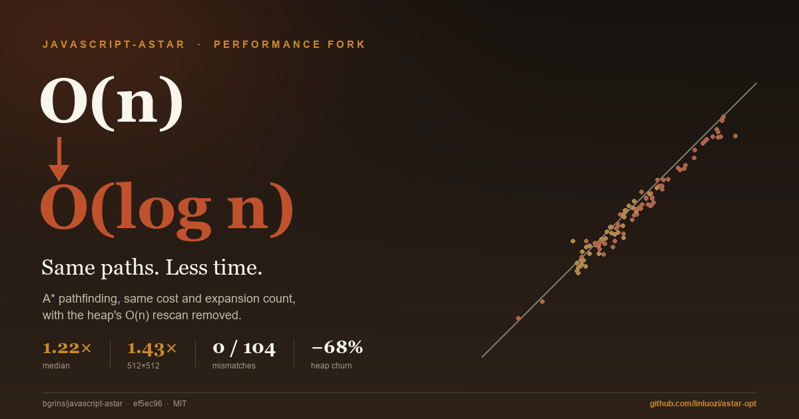
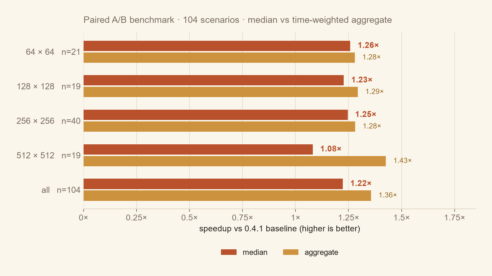
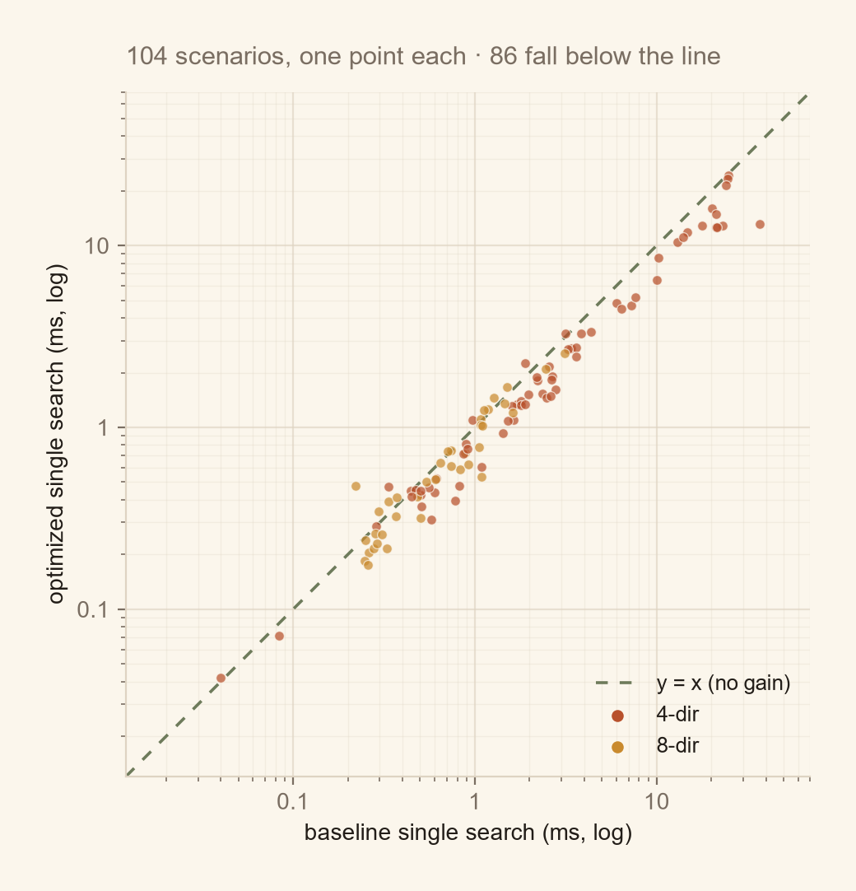
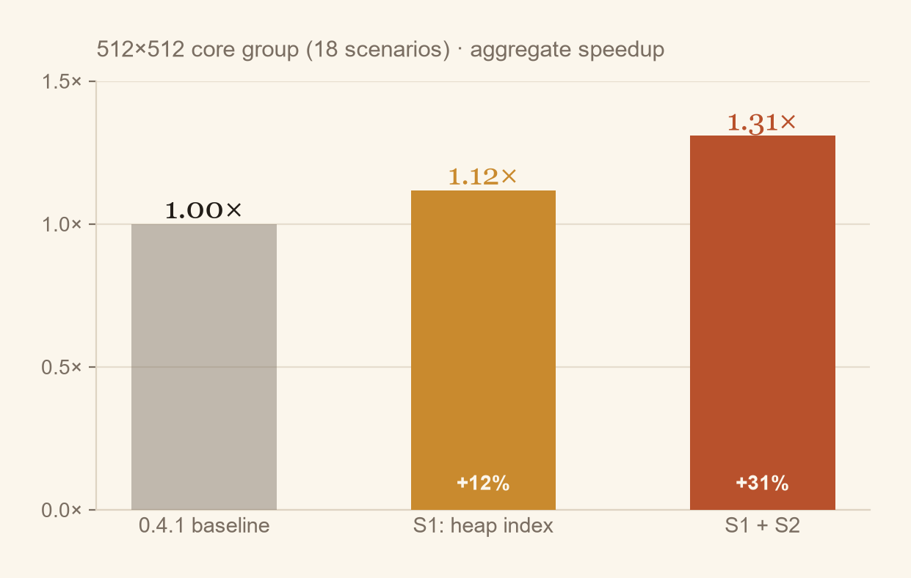
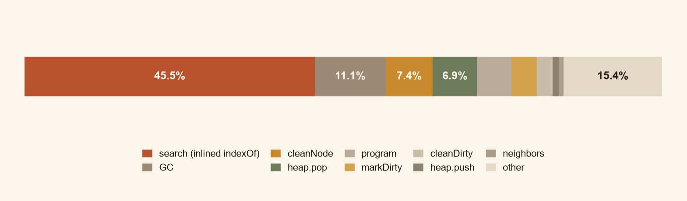

00 · 结论先行这次优化买到了什么
原始实现每次改进一个邻居，都要在开放表里做一次 Array.indexOf。512×512、35% 障碍的单次搜索会触发 2,902 次 rescore，平均开放表 1,183 项，累计扫描 176 万个数组元素；8 方向 + octile 启发式的场景扫描量是 538 万。把位置缓存进堆元素之后，这一步变成 O(1) 定位 + O(log n) 下沉。
核心改动
S1 修堆：_heapIndex 替代 indexOf；S2 修热路径：内联 8 邻域、去掉每节点数组分配、堆直接比较 .f、pathTo 改 push+reverse、cleanDirty 只清两个标志。
等价性
104 个基准场景、96 个差分检查、10 个上游 QUnit 断言全部通过；返回路径长度也一致。Graph.neighbors() 的节点顺序未变。
01 · 仓库核验它值得改，而不是该被换掉
按要求先核验首选仓库，而不是根据搜索摘要判断。以下信息来自 git clone 后的实际文件、git log 与 GitHub REST API（2026-10-17 抓取）。
| 项目 | 实际情况 |
|---|---|
| 地址 | github.com/bgrins/javascript-astar |
| Stars / Forks / 未关闭 Issue+PR | 1,391 / 315 / 36（API 返回值；archived = false） |
| 许可证 | MIT。LICENSE 原文为标准的 “Permission is hereby granted, free of charge …” 条款，版权人 Brian Grinstead。 |
| 创建 / 最后代码提交 | 2010-09-15 / 2015-12-17（ef5ec96，whitespace in test file） |
| 提交数 / 标签 | 154 次提交；标签 0.0.1 → 0.4.1 |
| 运行依赖 | 无。单文件 UMD，浏览器 <script> 或 Node require 均可；main: ./astar.js。 |
| 开发依赖 | grunt ~0.4.5、grunt-contrib-qunit ~0.5.0、grunt-contrib-jshint ~0.10.0 —— 2015 年的工具链，qUnit 任务依赖 PhantomJS。 |
| 测试 | test/tests.js 共 10 个 QUnit 断言（基本路径、权重、对角、closest、多次搜索、GPS 自定义图）。用 Node shim 运行：10/10 通过。 |
| CI | .travis.yml 指定 Node 0.11 + grunt default；没有 GitHub Actions。这套配置停留在 PhantomJS 时代，现代 Node 上无法直接执行。 |
| 自带性能测试 | benchmark/：100/150/250/500 四张手绘地图 + 浏览器页面，循环 1000 次取平均；无 Node 版本、无统计量、无最优性校验。 |
| 近期活动 | pushed_at 2023-09-04；2023 年只有 ESM 导出 PR（#80）与一批 “Update …” PR，算法代码自 2015 年未变。 |
为什么没换仓库
它同时满足四个条件：有真实历史（154 commits、6 个版本）、有可运行代码（零依赖、Node 直接跑）、有测试基础（10 个断言覆盖核心行为）、许可证明确（MIT）。403 行、一个文件，瓶颈可以被精确定位而不是靠猜。相比之下，换一个更大的路径搜索库会引入构建系统、图结构抽象和未知依赖，反而让“同一输入、同一环境、只改算法”的验证变难。
相关 Issue / PR（真实存在，逐条读过）
| 编号 | 标题 | 状态与本次关系 |
|---|---|---|
| #31 | Replacing Binary Heap's indexOf | 2014 年开，仍 open。报告者称 IonMonkey 下大部分时间花在内部 indexOf——正是本次主瓶颈。 |
| #51 | Diagonal heuristic computes square root of 2 every time | 2016 年开，仍 open。改为 Math.SQRT2 常量，数值完全一致。 |
| #52 | Pathing randomly fails after first search (closed nodes not reset) | 2016 年开。本次在 128² 地图上用 6 组端点反复搜索，0 处差异，未复现；但最小化重置后确实遇到 stale parent 风险，已显式切断。 |
| #34 | Sub-optimal pathing | 已关闭。本次在 8 方向 + 默认曼哈顿启发式下复现 2.5–6.7% 次优（见第 06 节），与该类问题的表现一致。 |
| #10 | diagonal cost isn't taken into account | 2012 年开。0.4.0 已按 weight × 1.41421 计费，描述已过时。 |
| #82 | Modernized fork released on npm: javascript-astarf | 2025 年开。存在第三方现代化分支；为避免引入未审计差异，本次直接在原仓库上改。 |
能否安装 / 构建 / 运行
能运行，不需要构建。Node 22.12 下 require('./astar.js') 直接可用，10 个断言全部通过。不能按 2015 年的方式跑 CI：grunt-contrib-qunit 需要 PhantomJS 二进制，现代 Node 上不可用；因此本次新增了一个 40 行的 shim 来执行原断言，测试文件本身未改。依赖层面没有安全/版本冲突风险，因为运行时零依赖。
02 · 基线方法先让测量本身可信
原始仓库只有“浏览器里循环 1000 次取平均”，没有种子、没有分位数、没有最优性校验。为了能比较，新增了一套独立的基准台，但不改动被测量的算法。
场景矩阵
规模 64/128/256/512；障碍密度 0/10/20/30/35/40%；近/中/远三档起终点；4 向/8 向；权重 1 与 1–3；不可达、1×64 走廊、起终点相同、封闭目标、仓库自带 100/250/500 地图。
统计口径
固定种子（mulberry32）；每场景独立子进程；基线与优化版交替运行，2 次预热后测 11 次，共 3 轮；取轮中位数的中位，同时保留 P95；路径代价由独立 Dijkstra 校验。
为什么必须独立进程
最初在同一个进程里连续跑 48 个场景，512² 重负载从 25 ms 被抬高到 58 ms——上一个场景留下的 26 万节点图还没被回收，GC 落在下一次计时区间里。改成“一个场景一个子进程”后，基线与优化版走完全相同的路径，数字才可比。这是本次实验里最重要的测量修正。
指标
| 指标 | 采集方式 |
|---|---|
| 单次搜索耗时 | performance.now()，只包住 astar.search()；建图、建堆、路径校验都在计时区外。 |
| 访问 / 展开节点 | 搜索后统计 node.closed（展开）与 node.visited（进过开放表）。 |
| 路径代价 / 长度 | 按 GridNode.getCost() 逐边累加；独立 Dijkstra 用相同移动语义（含 1.41421 对角代价、不禁止切角）给出最优值。 |
| 成功率 / 最优性 | 不可达返回空数组；gap = (cost − optimal) / optimal；同时校验路径连续、不过墙、终点正确。 |
| 内存 | global.gc() 后的 heapUsed 差值（分配压力代理），不是峰值 RSS。 |
| 可复现性 | 同一场景重复运行必须同代价；不同实现必须同代价、同展开数。 |
03 · 瓶颈不是“堆慢”，是堆里的线性扫描
先跑 V8 CPU profile（12 次 512²/35% 搜索），再给原始算法加计数器（只加计数，不改逻辑），把“感觉慢”变成可核对的数字。
search 的 45.5% 里包含被 V8 内联的 Array.indexOf；cleanNode 7.4% 来自每次搜索前的脏节点重置。插桩计数：扫描量
| 场景 | 展开节点 | rescore 次数 | 平均开放表 | indexOf 扫描元素 |
|---|---|---|---|---|
| 512² · 35% 障碍 · 4 向 | 67,189 | 2,902 | 1,183 | 1,757,467 |
| 256² · 权重 1–3 | 25,634 | 3,713 | 991 | 2,217,108 |
| 512² · 8 向 + octile | 14,886 | 10,421 | 854 | 5,383,711 |
一个反直觉的点：8 方向 + 正确 octile 启发式的场景只展开 1.5 万节点，却因为改进频繁（1.04 万次 rescore）产生最多的扫描。也就是说，“节点少”不等于“堆操作少”；只看展开数会选错优化目标。
被排除的候选
- 启发式错误？ 曼哈顿在 4 向、单位权重下可采纳且一致；对角模式则是真实的 API 陷阱（见第 06 节），但不是本次速度瓶颈。
- 重复入队 / 重复访问？ 原实现已经用
rescoreElement做 decrease-key，没有重复入堆；问题在于 decrease-key 本身是 O(n)。 - 对象分配？
Graph.neighbors()每次扩展新建一个数组，68k 次扩展就是 68k 个短命数组；profile 的 GC 11.1% 与之相关。 - 双向 A* / JPS？ 理论收益存在，但需要第二套节点状态与正确停止条件；JPS 只适用于均匀代价，会破坏权重语义。本次不做，列入后续。
04 · 实施两次小改动，每次都跑完整套
优化在独立工作副本 work/ 的 optimize 分支上进行，原始 0.4.1 保留在 upstream/ 不动。每级都单独提交、单独跑 10 个断言 + 104 个基准场景。
S1 · 堆位置缓存（commit 9d5a08c）
原瓶颈：rescoreElement(node) 每次调用 this.content.indexOf(node)，在 1,000+ 项的数组里线性找位置。改法：push 时记录 _heapIndex，pop / sink / bubble 的每次交换同步更新；rescore 直接取下标，失效时才回退扫描。预期：把 decrease-key 从 O(n) 降到 O(log n)。
// before
rescoreElement: function(node) {
this.sinkDown(this.content.indexOf(node));
}
// after
rescoreElement: function(node) {
var i = node._heapIndex;
if (i == null || i < 0 || this.content[i] !== node) {
i = this.content.indexOf(node);
if (i === -1) return;
}
this.sinkDown(i);
}结果：512 组 18 个场景的合计耗时 229.3 → 205.0 ms（聚合 1.12×）。按场景中位只有 1.06×——因为其中一半是亚毫秒到几毫秒的对角线用例，固定开销盖过了堆扫描的收益。
S2 · 热路径去分配（commit d61474d）
原瓶颈：每展开一个节点就 graph.neighbors() 新建数组；每次比较都调用 scoreFunction 闭包；pathTo 用 unshift 导致 O(L²)；cleanDirty 重置 7 个字段并为每次搜索新建数组。改法：对内置 Graph 直接展开 8 邻域（保持 W/E/S/N/SW/SE/NW/NE 顺序），自定义图仍走 neighbors()；堆直接比较 .f；pathTo 改 push+reverse；只清 visited/closed 并复用数组；h 只在首次访问时计算。
// 内联展开，避免每节点一个数组；顺序与原 neighbors() 完全一致
col = grid[x - 1];
if (col) { nb = col[y]; if (nb) visit(nb, nb.weight); }
col = grid[x + 1];
if (col) { nb = col[y]; if (nb) visit(nb, nb.weight); }
col = grid[x];
nb = col[y - 1]; if (nb) visit(nb, nb.weight);
nb = col[y + 1]; if (nb) visit(nb, nb.weight);
// 对角：SW, SE, NW, NE（不是按列分组，否则会改变同分节点的出堆顺序）Graph.neighbors() 完全相同的顺序后，104 个场景重新做到 0 差异。同分节点的顺序也是行为的一部分。05 · 结果同一套输入，同一套参数
下面是 104 个场景的正式结果（每场景独立进程，A/B 各 3 轮 × 11 次，取中位）。完整原始数据在 results/，可用 bench/compare.js 复算。
| 规模 | 场景数 | 中位加速 | p10 | p90 | 基线合计 | 优化后合计 | 聚合 |
|---|---|---|---|---|---|---|---|
| 64² | 21 | 1.26× | 1.00× | 1.54× | 9.6 ms | 7.5 ms | 1.28× |
| 128² | 19 | 1.23× | 0.85× | 1.73× | 23.7 ms | 18.3 ms | 1.29× |
| 256² | 40 | 1.25× | 1.07× | 1.48× | 157.3 ms | 122.8 ms | 1.28× |
| 512² | 19 | 1.08× | 0.90× | 1.79× | 236.5 ms | 165.8 ms | 1.43× |
“聚合”= 该组所有场景中位耗时之和的比值，避免小场景把中位数拉平；中位数与聚合分别回答“典型场景快多少”和“整组总时间少多少”。
代表性场景
| 场景 | 基线 | 优化后 | 加速 | 展开节点 | 路径代价 |
|---|---|---|---|---|---|
| 512² · 无障碍 · 4 向 | 21.21 ms | 12.65 ms | 1.68× | 35,062 | 918.00 |
| 512² · 20% 障碍 · 4 向 | 21.22 ms | 14.96 ms | 1.42× | 39,867 | 918.00 |
| 512² · 35% 障碍 · 4 向 | 24.84 ms | 24.22 ms | 1.03× | 67,189 | 970.00 |
| 512² · 35% 障碍 · 4 向 (seed 2) | 24.62 ms | 23.26 ms | 1.06× | 66,552 | 974.00 |
| 256² · 权重 1–3 | 12.97 ms | 10.41 ms | 1.25× | 25,634 | 489.00 |
| 256² · 8 向 + octile | 2.45 ms | 2.11 ms | 1.16× | 3,390 | 332.64 |
| 256² · 35% 障碍 | 20.21 ms | 16.00 ms | 1.26× | 35,121 | 534.00 |
| 仓库自带 500×500 | 1.89 ms | 2.27 ms | 0.84× | 4,600 | 280.00 |
| 256² · 40% 障碍 | 7.28 ms | 4.69 ms | 1.55× | 13,304 | 592.00 |
| 256² · 远距离 | 2.21 ms | 1.81 ms | 1.22× | 5,621 | 458.00 |
| 128² · 8 向 + 默认启发式 | 0.29 ms | 0.35 ms | 0.85× | 132 | 171.42 |
规律很清楚：开放表越大、rescore 越多，收益越大。同样是 512²、四方向：无障碍时 21.21 → 12.65 ms（1.68×），20% 障碍 1.42×，35% 障碍只剩 1.03×——此时展开数不变（67k），瓶颈回到节点扩展本身。8 方向 + octile 的 256² 场景为 1.16×。
P95 与内存
512² 无障碍 · P95
单次搜索的第 95 百分位耗时（seed 2），不是只优化了“最好的一次”。
堆增量（≥256 规模，中位）
每次搜索的 heapUsed 增量，−68%。主要来自不再为每个节点创建邻居数组，以及脏节点数组复用。
按测试组
| 测试组 | 场景 | 中位加速 | p10 | p90 | 聚合 |
|---|---|---|---|---|---|
| core | 72 | 1.21× | 0.91× | 1.57× | 1.29× |
| density | 10 | 1.38× | 0.96× | 1.71× | 1.38× |
| distance | 6 | 1.14× | 1.07× | 1.22× | 1.17× |
| diagonal | 2 | 1.19× | 1.16× | 1.22× | 1.19× |
| weights | 4 | 1.28× | 1.25× | 1.48× | 1.28× |
| special | 10 | 1.31× | 0.71× | 1.84× | 2.13× |
各组中位在 1.14–1.38× 之间。权重场景 1.28×，与无权重的 core 1.21× 接近——优化没有“顺带”改变加权语义；distance 组 1.14× 偏低，因为其中多为几百次扩展的短路径。
06 · 正确性速度不能拿最优性换
所有比较都使用同一张图、同一个起点/终点、同一个启发式。判定标准不是“看起来差不多”，而是：路径代价完全相等（1e-9）、路径长度相等、展开节点数相等、路径连续且不穿墙。
| 检查 | 数量 | 结果 |
|---|---|---|
| 基准场景（7 组） | 104 | 0 处代价 / 展开数差异 |
| 差分检查（优化版 vs 冻结 0.4.1） | 96 | 全部通过 |
| 上游 QUnit 断言 | 10 | 10/10 |
| 同图重复搜索（6 组端点，复用 vs 新建） | 6 | 0 差异 |
| Graph.neighbors() 顺序 | 9 | 节点与顺序一致 |
顺带发现的真实缺陷（未改，避免破坏兼容）
8 方向移动时，原实现默认仍用曼哈顿距离。曼哈顿在 8 向图上是不可采纳的（对角一步只花 1.414，曼哈顿按 2 计），因此会返回次优路径。104 个场景中，8 向 + 默认启发式的 18 个场景出现 2.5%–6.7% 的代价差距；显式传 heuristic: astar.heuristics.diagonal 后差距为 0。
README 的示例本身传了对角启发式，所以这不是“库坏了”，而是默认值容易踩坑。本次不改默认行为——改了会改变所有依赖默认值的调用方；建议在使用处显式传参，或未来以 major 版本变更默认值。
ef5ec96 上未能复现：6 组端点交替搜索，复用图与新建图的路径长度/代价完全一致。原因可能是 2014 年的 dirty-node 修复（0d768b0）已经覆盖。但把 cleanDirty 最小化后，确实出现过一个真实风险：起点若是上一轮扩展过的节点，parent 链会指回旧搜索，pathTo 会无限循环。已在 search 开头显式切断，并纳入差分测试。07 · 否决与限制没做的那部分，以及为什么
被数据否决的想法
| 想法 | 测量结果 | 决定 |
|---|---|---|
| f 相等时偏向更大的 g（tie-break） | 快速探针（7 次中位）：512² 无障碍展开 35,062 → 918，7.1 → 1.3 ms；512²/35% 障碍 19 → 22 ms | 不默认启用：开阔图收益巨大，稠密图反而慢 15%，且改变同分顺序。 |
| 堆使用并行 Float64Array 存分数 | 快速探针：18.8–19.7 ms vs 17.8–19.2 ms，无统计意义上的收益 | 放弃：多一份状态，没有回报。 |
| cleanDirty 重置全部 7 个字段 | profile 中 cleanNode 7.4%，其中大部分是对即将被覆盖字段的 dead store | 改为只清 visited/closed，复用数组。 |
| 双向 A* / JPS | 未实现 | 双向需要第二套节点状态与正确停止条件；JPS 假设均匀代价，会破坏权重语义。列入后续，而不是硬塞进默认路径。 |
这份结果不能说明什么
- 只在 Node 22.12 / Windows 11 / 单线程上测过。浏览器 JIT、Safari/Firefox、Worker 环境可能给出不同比值；代码是纯 JS，没有平台 API。
- 亚毫秒场景受计时噪声主导。64² 组的 p10 只有 1.00×，个别用例 <1×；仓库自带 500×500 的短路径 1.89 → 2.27 ms 也在噪声范围内。
- 内存是分配增量，不是峰值 RSS。没有测 GC 次数、堆峰值或驻留集。
- 没有跑原始 Grunt/PhantomJS CI。2015 年的工具链在现代 Node 上不可用；上游断言用 shim 执行，断言内容未改。
- 没有验证 2,000×2,000 以上或动态障碍。O(n) → O(log n) 的收益会随开放表增大而更明显，但未实测。
- 没有改默认启发式。这是行为兼容的决定，不是“没发现”。
08 · 图集同一组数据的 PNG 版
报告里的图是内联 SVG；下面这套 PNG 由 build/gen_images.py 从同一份 results/ 生成，可直接用于 GitHub README、PPT 或分享。文件在 images/。





09 · 复现三组命令，从零到同款数字
工作副本在 astar-lab/work，基线在 astar-lab/upstream（未改动），优化分支为 optimize。
# 1. 上游断言 + 96 个差分检查
cd work
node test/node-tests.js
node test/equivalence.js
# 2. 基线与优化版：A/B 交替，每轮 11 次，3 轮，独立进程
B=bench/baseline/astar-0.4.1.js
O=./astar.js
S=core,density,distance,diagonal,weights,special,repeat
node --expose-gc bench/paired.js --reps=11 --rounds=3 \
--base=$B --opt=$O --suites=$S \
--outBase=results/final-base.json \
--outOpt=results/final-opt.json
# 3. 逐场景对比 + 汇总
node bench/compare.js \
--base=results/final-base.json --cand=results/final-opt.json
node bench/analyze.js \
--base=results/final-base.json \
--opt=results/final-opt.json --out=results/analysis.json
文件
| 路径 | 内容 |
|---|---|
upstream/ | 原始克隆，ef5ec96，未修改 |
work/astar.js | 优化后的单文件实现（403 → 470 行） |
work/test/equivalence.js | 与冻结 0.4.1 的 96 个差分检查 |
work/bench/ | 场景生成、Dijkstra 参考、隔离测量、对比与汇总 |
work/OPTIMIZATION.md | 仓库内的优化说明（英文，含复现命令） |
results/ | 原始运行记录、final-runs.csv、summary.md、analysis.json |
提交：9d5a08c S1 堆索引 · d61474d S2 热路径 · 767bec4 测试与基准 · 工作副本基于 ef5ec96，仅多一个换行规范化提交。